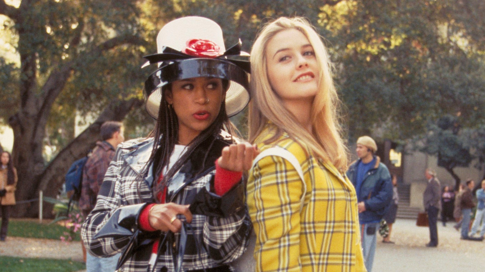
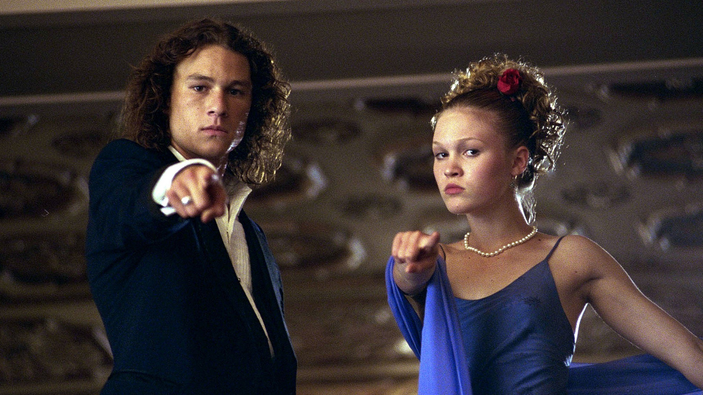
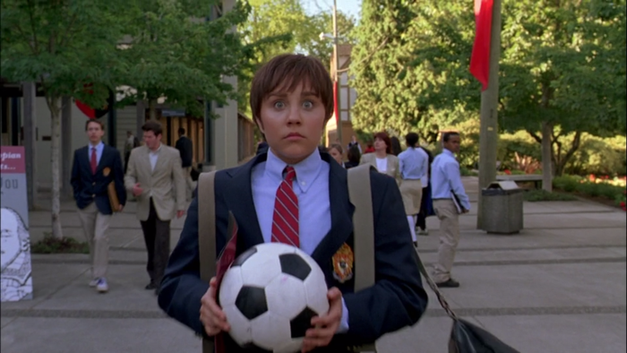
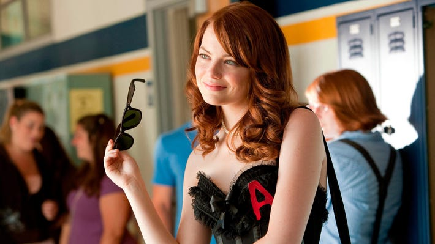
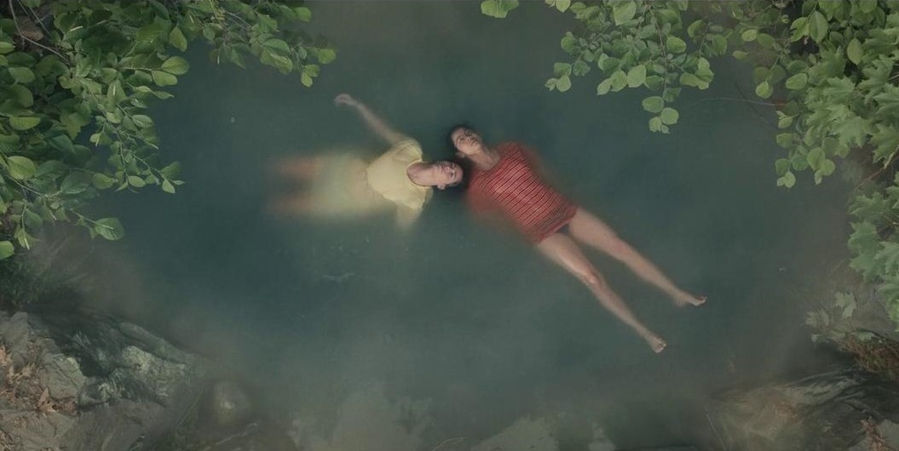
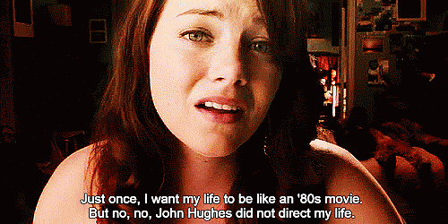

“The books you read in class always seem to have a strong connection with whatever angsty adolescent drama is being recounted.”
From the early ’80s to the early 2000s, teen coming-of-age rom-com films dominated the silver screens.
What made these films so beloved was the drama and thrill of high school that so many resonated with.
First crushes, jealousy, social status, societal pressures, the need to prove oneself, and hormone-driven adolescence that fogs sensible thinking, are all points hit in these films.
Coincidentally, the same can be said of classic literature.
William Shakespeare’s Romeo and Juliet is a perfect example of a classic piece that is a story of the ages.
We have seen Romeo and Juliet reworked for a modern retelling in several films. The most obvious one being Romeo + Juliet starring Leonardo DiCaprio and Claire Danes.
Other films that are adaptations or inspired by classic literature are Vally Girl (1983),She’s All That (1999),Cruel Intentions (1999),Get Over It (2001),O (2001),Material Girls (2006), and John Tucker Must Die (2006). Here are some of my favorites:
CLUELESS

CLUELESS
Clueless is a 1995 teen coming of age film that is loosely based on Jane Austen’s 1815 novel, Emma. Both stories surround over-confident matchmaking and romantic misunderstandings. With a modern-day Beverly Hills twist, Clueless takes inspiration from Emma with its character attributes and plotline.
However, both have distinct differences that allow them to still stand strong on their own. Clueless effortlessly translates the 19th-century novel into a teen rom-com, which is notable by the film’s aesthetic and memorable lines.
Both Cher (Clueless) and Emma (Emma) harness their respective matchmaking skills to help a dear friend find confidence and love. Both characters have the best intentions but become overzealous and oblivious to the guy right in front of them.
10 THINGS I HATE ABOUT YOU

10 THINGS I HATE ABOUT YOU
10 Things I Hate About You is the teen film adaptation of classic literature. A modernization of William Shakespeare’s late 16th-century comedy play The Taming of the Shrew, This 1999 film has everything that makes a coming of age rom-com a hit. While The Taming of the Shrew primarily preys upon a woman’s obedience, 10 Things I Hate About You subverts Shakespeare’s themes with nuance. Both fictional pieces follow the same premise but differ in their handling of character development. Kat (10 Things I Hate About You) is a free-thinking high school senior that calls out the sexist restrictions and unreasonable expectations of girls in high school. Even while she is being “tamed” she never becomes docile and never forgets who she is. Opposite to the play, Patrick (10 Things I Hate About You) doesn’t force Kat to be in any way that strays from her personality. Throughout the film, Patrick makes the effort to understand Kat, and yes, it started as a ploy, but he ultimately falls in love with her and takes responsibility.
SHES THE MAN

SHES THE MAN
Another teen film inspired by William Shakespeare, She’s the Man is an iconic 2009 film that was influenced by Shakespeare’s romantic comedy play, Twelfth Night. Filled with misunderstandings and confusing love triangles,
She’s the Man is a subtle retelling of Twelfth Night which tells the story of a girl who pretends to be a man and runs into awkward situations.
There are little easter eggs throughout She’s the Man that allude to the play. For example, the name of the high school in She’s the Man is called Illyria, which is the setting of Twelfth Night. Another example comes from Duke (She’s the Man) when he recites a direct Twelfth Night quote, “Some are born great, some achieve greatness, and some have greatness thrust upon them.” While both works explore gender, She’s the Man absolutely defies stereotypical gender roles.
EASY A

EASY A
The screenplay for the 2010 romantic comedy Easy A, was partially inspired by Nathaniel Hawthrone’s 1850 novel, The Scarlet Letter. Yet, instead of merely retelling Hawthrone’s classic novel, Easy A reimagines it entirely through a feminist lens. Easy A parodies The Scarlet Letter’s concepts of guilt and shame with liberation and confidence. Of course, at the root of both works, the social stigmatization of women is the crux of the stories. However, the way both pieces of fiction address this issue is what separates them. In The Scarlet Letter, Hester Prynne is punished to wear a scarlet “A” for the rest of her life as public humiliation for crimes of giving birth to a baby of unknown parentage. In Easy A, Olive Penderghast decides to wear more provocative clothing and stitches an “A” onto her clothing as a way to counteract the harassment she faces when everyone in school thinks of her as a “dirty skank.”
THE HALF OF IT

THE HALF OF IT
The Half of It is a recent 2020 coming of age comedy-drama that is a modern loose retelling of Cyrano de Bergerac, a 1897 play by Edmond Rostand. The Half of It and Cyrano de Bergerac share a complicated triangle that worsens by a failed wingman/wingwoman attempt. In both stories, the protagonist is held back from admitting their romantic feelings to someone because of their anxieties. However, while Cyrano’s (Cyrano de Bergerac) anxiety stems from his obnoxiously large nose, Ellie’s (The Half of It) lies with her sexuality. When both protagonists are contracted to write letters for a man who is also attracted to their crushes, they agree, but it only strengths their own emotions. The Half of It reimagines Cyrano de Bergerac through a queer lens but also focuses heavily on the platonic friendship between Ellie and Paul.

If you want to learn more and see what other of your favorite teen films were adapted or inspired by classic literature, Watch this video!